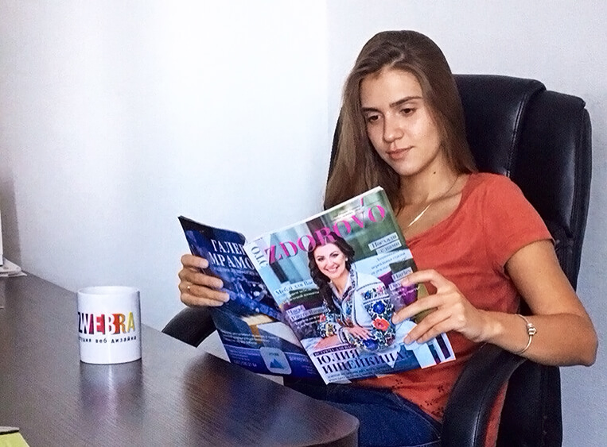

Продвижение в социальных сетях: модный тренд в ведении современного бизнеса
Лилия Смирнова / 28.11.2016506

Вы когда-нибудь задумывались над тем, как тратите свое свободное время? Правильный ответ: в социальных сетях. Мы отдыхаем, пролистывая новостную ленту, переписываясь с друзьями, совершая там покупки и многое, многое другое. Социальные сети стали неотъемлемой частью нашей жизни, поэтому нет ничего удивительного в том, чтобы продвигать свой бизнес, используя Вконтакте, Facebook или Instagram.
О наиболее популярных социальных площадках для продвижения бизнеса, главных преимуществах их использования и выгоде, которую получает каждая компания, расскажет начальник SMM-отдела нашей веб студии Марина Коробова.
- Марина, поделитесь, как давно Вы работаете в этой сфере и как к этому пришли?
- Меня всегда привлекали социальные сети: не только с целью общения и приятного времяпрепровождения, но и как инструмент, с помощью которого можно извлекать выгоду. Вначале я вместе со своим братом продавала спортивные товары и изучала сам механизм продажи и продвижения того или иного бренда через сети.
Я сама активный пользователь социальных сетей и предпочитаю совершать покупки/продажи, пользуясь именно этой площадкой. Со временем моя увлеченность продвижением в социальных сетях привела меня в самую динамичную веб-студию в нашем городе, которая занимается созданием сайтов, продвижением брендов и различных услуг в Интернете. В нашем офисе сегодня работает более 20-ти специалистов в различных областях, что позволяет нам предложить клиентам максимально широкий спектр услуг, креативный и индивидуальный подход к каждому проекту и высокое качество его исполнения.
У нас есть дизайнеры, маркетологи, программисты, проектные менеджеры - настоящие специалисты своего дела. Моя работа предполагает именно продвижение Вконтакте, Instagram и Facebook.
- Вы работаете с 3-мя популярными социальными сетями. Почему выбор пал именно на них и кому подойдет та или иная сеть?
- На самом деле, выбор той или иной сети сугубо индивидуален. Все зависит от того, какой бренд или услугу мы будем продвигать, какие материалы готов предоставить клиент и того, на какую целевую аудиторию рассчитан продукт.
Так, Вконтакте – это социальная сеть, популярная среди молодежи. Она простая в использовании и привлекательна огромной аудиторией, которую можно привлечь и заинтересовать. Instagram подойдет для такого заказчика, который может предоставить красивую фото и видео-продукцию. Поэтому эта площадка не для всех: не все товары можно выгодно представить, опираясь на одни только снимки. Так, если ваш бренд – это креативное кафе, интересный магазин или услуга – welcome, аудитория будет ваша, но если вы предлагаете покупателю, например, текстиль, нужно понимать, что товар такого рода попросту «не зайдет» в эту социальную сеть.
Впрочем, если ваш бренд может предложить что-то действительно интересное, то здесь вас ждет обеспеченная и платежеспособная аудитория. Вообще, стоит отметить, что Instagram – это настоящий хит последнего времени: из популярной игрушки для бесконечных селфи и прочих фото он превратился в мощнейшую платформу для продвижения.
Еще одна сеть, с которой мы работаем – это Facebook. Это социальная сеть №1 в мире. Более миллиарда пользователей. Более обеспеченная аудитория, чем в том же Вконтакте. Здесь «обитают» те, кому интересен бизнес: более 70% поклонников этой социальной сети подписаны на бизнес-страницы.
Учитывая все эти и другие показатели мы разрабатываем определенную стратегию, которая поспособствует максимально эффективному продвижению. Иногда мы ориентируемся и «заходим» сразу в 3 социальные сети, иногда используем только одну.

- Марина, Вы так увлеченно говорите о каждой из этих сетей и о продвижении в целом. А кому оно нужно – продвижение в социальных сетях? Может, без него можно обойтись?
- Разумеется, без продвижения в социальных сетях можно обойтись, при условии, что вы не хотите, чтобы ваш товар или услуга были замечены и востребованы, а в будущем – вытеснены более преуспевающими и идущими в ногу со временем конкурентами. Будущее – за социальными сетями!
На самом деле, я считаю, что без продвижения, а тем более без грамотной и эффективно выстроенной программы для его осуществления попросту не обойтись. Оглянитесь вокруг! Мы сидим в кафе и буквально каждый его посетитель сидит в своем гаджете и, если мы присмотримся повнимательнее, то увидим, что люди сидят преимущественно в социальных сетях.
Поэтому, если вы представляете свои товары или услуги в Интернете или даже в оффлайне (а это рестораны, магазины, салоны красоты, - да что угодно) – продвижение в социальных сетях – именно для вас. Оно позволит выстроить более тесные отношения с аудиторией, привлечь новых потенциальных клиентов, заинтересованных в вашем бренде, а грамотное планирование и постоянная подпитка сети позволит удержать их на длительный срок.
Мы работаем и стараемся выстроить долгосрочные взаимовыгодные отношения. Многие наши клиенты сотрудничают с нами 1-2 года и все это – успешные проекты.
- Представим ситуацию. К вам пришел заказчик. С чего начинается вашего сотрудничество?
- Клиент дает нам информацию, которая поможет определиться, в каком направлении будем работать. Мы должны понимать, что мы продвигаем и на что рассчитывает клиент от такого сотрудничества. Обычно примерно неделю мы составляем план будущей работы, который потом предоставляем заказчику. Он должен ознакомиться с ним, внести коррективы, если это необходимо, утвердить. После приступаем непосредственно к продвижению. Нужно отметить, что это не мгновенный процесс: нужно примерно 2-4 месяца, чтобы вывести в социальную сеть новый бренд и сделать его более-менее узнаваемым. Как я уже говорила, продвижение предполагает долгосрочные проекты. Мы работаем на перспективу и не оставляем нашу работу, даже после того, как проект «вышел в свет».
В рамках работ по SMM мы предлагаем следующие услуги:
- оформление (дизайн) групп: баннер, лого, оформление постов, которые будут читаемыми и стимулирующими к действию;
- продумывание контетнтого плана: рекламного и развлекательного;
- продумывание конкурсов, розыгрышей.
Также осуществляем привлечение целевой аудитории путем подключения рекламной кампании. Это позволяет привлечь именно ту аудиторию, которая интересуют конкретно вашу компанию.
- Без чего невозможно успешное продвижение в социальных сетях?
- Без взаимной работы и сотрудничества между нами и ответственным лицом со стороны заказчика. Я очень люблю свою работу и погружаюсь в нее целиком! Изучаю, вникаю, анализирую… Когда мы беремся за какой-то проект, то попросту «живем» им. Поэтому для того, чтобы продвижение было успешным, я жду такой же отдачи и от заказчика. Например, мы периодически посещаем рестораны или кафе, которые рекламируем и, в случае если заметим какие-то недоработки или ухудшившееся качество обслуживания, сообщаем об этом клиенту, чтобы он мог вовремя исправить эти недочеты.
Мы очень дорожим своей репутацией и репутацией клиента!
- Марина, веб-студия Zwebra известна на рынке Кременчуга и за его пределами далеко не первый год. За это время многое успело измениться и Вы добились определенных успехов…
- Главное, чего нам удалось добиться – это довольные клиенты. Мы продвигаем совершенно различные услуги и к каждому заказчику у нас свой подход. Главное – чувствовать клиента, любить то, что делаешь и тогда все будет хорошо! Мы – за долгосрочное сотрудничество, и по сей день мы работаем с десятками ведущих компаний по Кременчугу и всей Украине. Приходите и убедитесь сами: с нами Ваш бренд обретет второе дыхание!